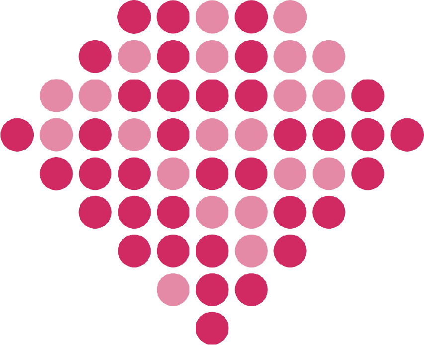

PicoRubyKaigi 2026 Assemble — 刺繍 色指示
糸は 5 色です。糸番号は色見本の番号です。
PicoRuby
塗り
14
(ピンク) / 縁
320
(ローズ)
Kaigi
塗り
8653
(白) / 縁
1738
(濃紺)
2026 Assemble
塗り
8653
(白) / 縁
22678
(シルバーグレー)
背中(肩甲骨の間): 約 25.4 × 4.3 cm / 縁取りはすべて 1 mm

Ruby(左胸)
暗いドット
320
(ローズ)
Ruby(左胸)
明るいドット
14
(ピンク)
左胸: 約 5.4 × 4.4 cm / 縁取りなし
糸番号
色
使用箇所
320
ローズ
Ruby の暗いドット / PicoRuby の縁
14
ピンク
Ruby の明るいドット / PicoRuby の塗り
8653
白
Kaigi の塗り / 2026 Assemble の塗り
1738
濃紺
Kaigi の縁
22678
シルバーグレー
2026 Assemble の縁